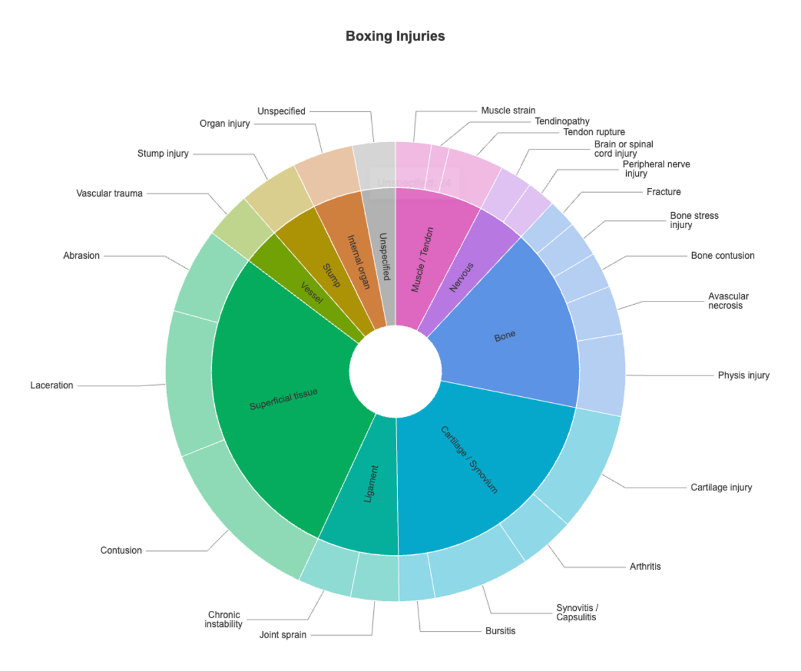

The spinviz package provides tools for visualising sporting injury frequencies as a heatmap projected onto human-body SVG diagrams in R, and interactive sunburst diagrams of injury tissue/pathology classifications.
The main function, heatmap_diagram(), colours anatomical regions by injury frequency and can render front, back, or both views, using male or female body templates. sunburst_diagram_echarts() renders tissue types on an inner ring and pathologies on an outer ring. Built-in taxonomies (body_categories, injury_categories), one-call wrappers, and save_diagram() for correct-aspect-ratio export are also included.
Full documentation, tutorials, and a function reference live on the pkgdown site.
Installation
As this package is not currently on CRAN, install from GitHub:
# install.packages("pak")
pak::pak("bnqcasimiro/spinviz")Quick examples
Heatmap diagram
heatmap_diagram(df, "boxing", "front", sex = "male", show_scale = FALSE)Example Diagrams
| Front (Male) | Back (Male) | Both Views (Male) |
|---|---|---|
 |
 |
 |
Sunburst diagram
sunburst_diagram_echarts(df, "boxing", plot_title = "Boxing Injuries")Example Diagram
| Tissue/Pathology Sunburst |
|---|
 |
Learn more
- Get started — data format and worked examples
- Importing data from a CSV file — template-based CSV workflow
- Customising and saving diagrams — palettes, display options, and file export
- Function reference
Dependencies
Key packages used:
- Data wrangling:
dplyr,tidyr,rlang,stringr - SVG handling:
xml2 - Iteration/utilities:
purrr,magrittr - Raster + plotting:
magick,ggplot2,grDevices - Combining plots:
patchwork - Interactive sunbursts:
echarts4r,htmlwidgets - Optional (sunburst file export only):
chromote,base64enc
Acknowledgements
spinviz builds on the foundations laid by the injvis and olympicinjuRies R packages. We thank Alexander Brinkman, Alexandra Dooley, Andisheh Saffarian, Brice Thu, and Utsav Chadha (injvis), and Zoe Remo, Brayden Smith, Govardhan Bharadwaj, Katja Amet, Kyle Mcnicholas, and Zachary Carr (olympicinjuRies), for their work on those projects, which provided the groundwork for this package.